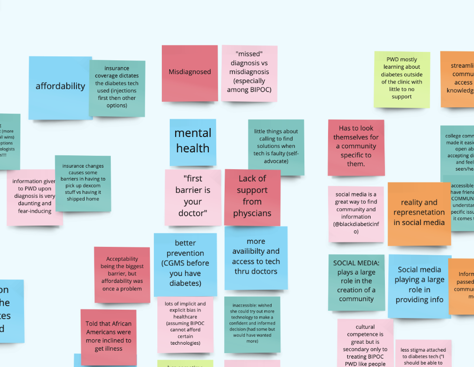

UCSD Design Lab: Project TechEquity
Role: UX Researcher
OVERVIEW:
For a span of 10 weeks, I worked alongside a team of designers and researchers at the Design Lab at UC San Diego to conduct user research about the people of color with Diabetes. Collaborating with a physician and diabetes community leaders, we began project techquity. Project Techequity was a 10-week design sprint at UCSD’s Design Lab, with its primary focus being on user research and gathering qualitative and quantitative data on how the intersectional group of people with color and diabetes experience differences in access to diabetes technology and their overall diabetes case management experience. Deliverables include user surveys, user interviews, and a final medium pamphlet. Project Techquity follows the double diamond approach to design, specifically the first portion, working towards future prototypes.
Research Question: How might we understand the specific pain points to design solutions that allow for more equitable access to diabetes technology for our BIPOC PWD?
01 Empathize and Secondary Research
In preparation for this project, our team took a 2 week course to give us basic information on diabetes as well as used a computer program and diabetes technology to mimic the daily life of a diabetic. This included bolusing, weighing food, and calculating carbs in after every snack and meal. After recording our journey, we began our sprint. We began with doing secondary research on the diabetes leaders we would be interviewing, including physicians and diabetes organization leaders we would have the privilege to speak to. We also looked into minority groups like people in minority ethnicities or the LGBTQ community to have a brief summary of how minorities might be affected in their management in diabetes different from those not in oppressed groups. An example of this is that: -HbA1c management and diabetes care for hispanic and black young adults were worse than their white counterparts.
02 Mentor interviews
We spoke to doctors who were our mentors and leaders in researching diabetes technology and the emotional aspect of being diagnosed with diabetes. We again organized our findings and found that: Trust between patient and provider is a large aspect in following diabetes suggestions Trust in general between society vs healthcare professionals is rocky. Physicians wanted to reframe health care as a right and not a priveledge High cost of insulin has stopped patients from following treatment even though if they wanted to. Difference between minorities: Dangerous neighborhoods restrict exercise, Not finding out their diagnosis until later, which is not ideal Reframing educational onboarding to be less complicated.

03 User Interviews and user personas
We interviewed 4 patients with diabetes and 3 diabetes leaders. In these interviews, I was in charge of asking questions about emotions when first being diagnosed, how those experiences differed being a minority, and how the onboarding process of diabetes technology was regarding the learning curve. We saw trends in misdiagnosis, lack of emotional support after diagnosis, and societal acceptance of using diabetes technology in the open. I created several user personas that reflected the physician and patient journey.
04 Ideation, wireframing, competitive analysis
The lab gave us creative freedom over our final deliverable. After conducting more affinity mapping after our user interviews, we observed that the informational pamphlet that patients receive after receiving their diabetes diagnosis was the primary source of stress and lack of emotional support. Thus, we decided to create a magazine that emphasizes storytelling and gives communities for minorities to reach out to. We then created a low fidelity prototype based off of this information. We looked at diabetes magazines and conducted competitive analysis based on what we observed. We saw that diabetes magazines focused primarily on nutrition, with some not acknowledging the differences in cultural food.
05 User testing, reiterating design
Low-Fidelity Testing: We conducted 5 user interviews with our previous interviewees and compiled critiques. The critiques included how magazines feel like they are trying to sell something to their audience and how it feels impersonal in our approach. We then were questioned on how practical carrying a magazine would be and how we want our deliverable to be. (long-term or short-term). Reiterating design: After discussing possible other mediums, the idea of a tearable card-shaped pamphlet came to mind. The pamphlet would allow patients to tear off pages they feel fit, with stories based on the experiences patients have shared with us on several pages and communities and resources attached next to those pages as well. Conversation starters with physicians were added and our previous appointment checklist was also revised to spark more conversation. High-fidelity Testing: I conducted 3 user interviews to share our high-fidelity prototype and once again iterated on the design after hearing advice from physicians regarding the scientific information on the pamphlet.
06 prototype presentation and obstacles overcome
I was able to present the final deliverable to physicians and patients, sparking discussion on implementing this pamphlet in an actual clinic. An obstacle that was prevalent in this project were the time constraints.The project was a span of 10 weeks, with little time to iterate designs between conducting user testing. However, I enjoyed the fast pace of the project and being able to interact with patients and show them how their stories can be shared through this medium. Another obstacle that our team faced was trying to address as many minority populations as we could have in our medium. We learned that although we can try our best, it is wise to pinpoint what our audience will be and focus on that instead of the whole population.